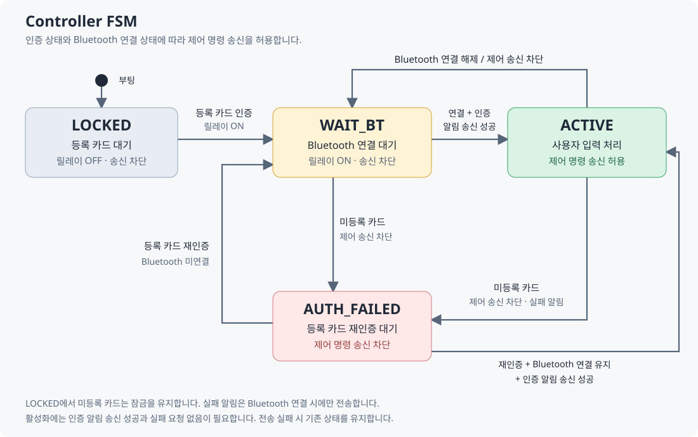
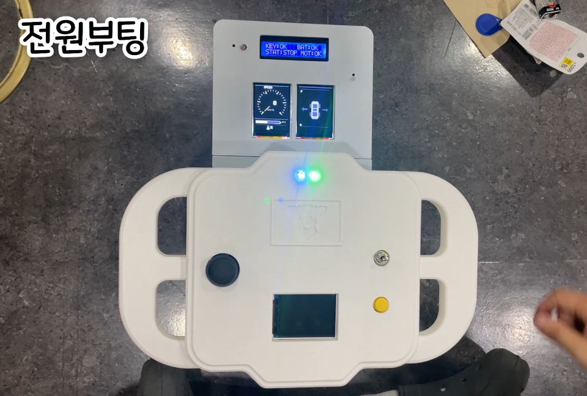
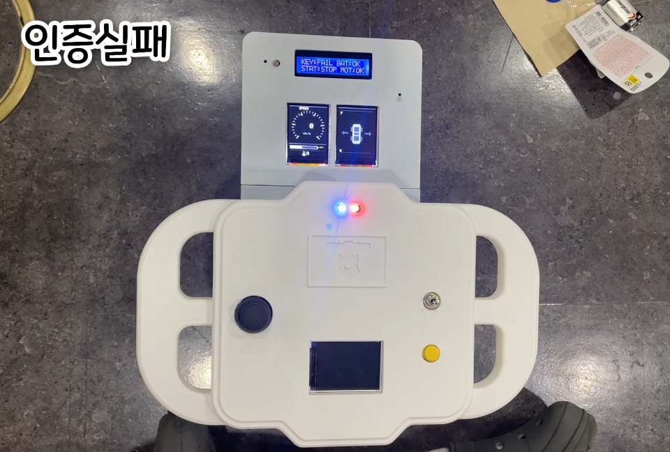

IMPLEMENTATION
FSM으로 인증·연결·제어 관리
등록 카드와 Bluetooth 연결을 함께 확인한 뒤 조작을 허용합니다.
카드 인증과 무선 연결 상태를 한곳에서 관리했습니다. 조종기는 잠금·연결 대기·조작 가능·인증 실패 상태에 따라 전원과 명령 전송 여부를 결정합니다.
부팅 시 릴레이와 송신을 차단하고, 인증 후 연결을 기다립니다. 연결이 끊기거나 인증 상태가 바뀌면 제어 명령을 제한하고 재연결·재인증을 처리합니다.

